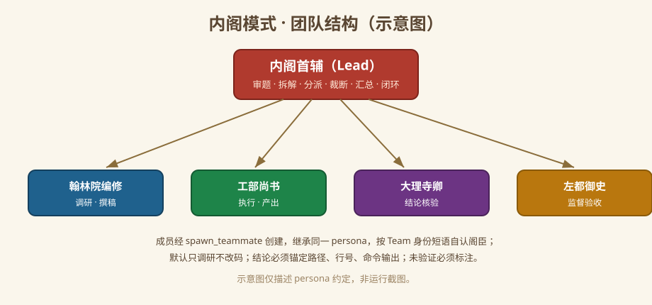
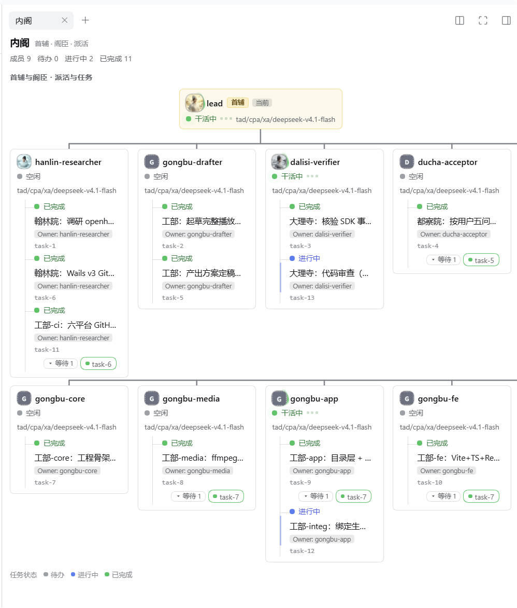
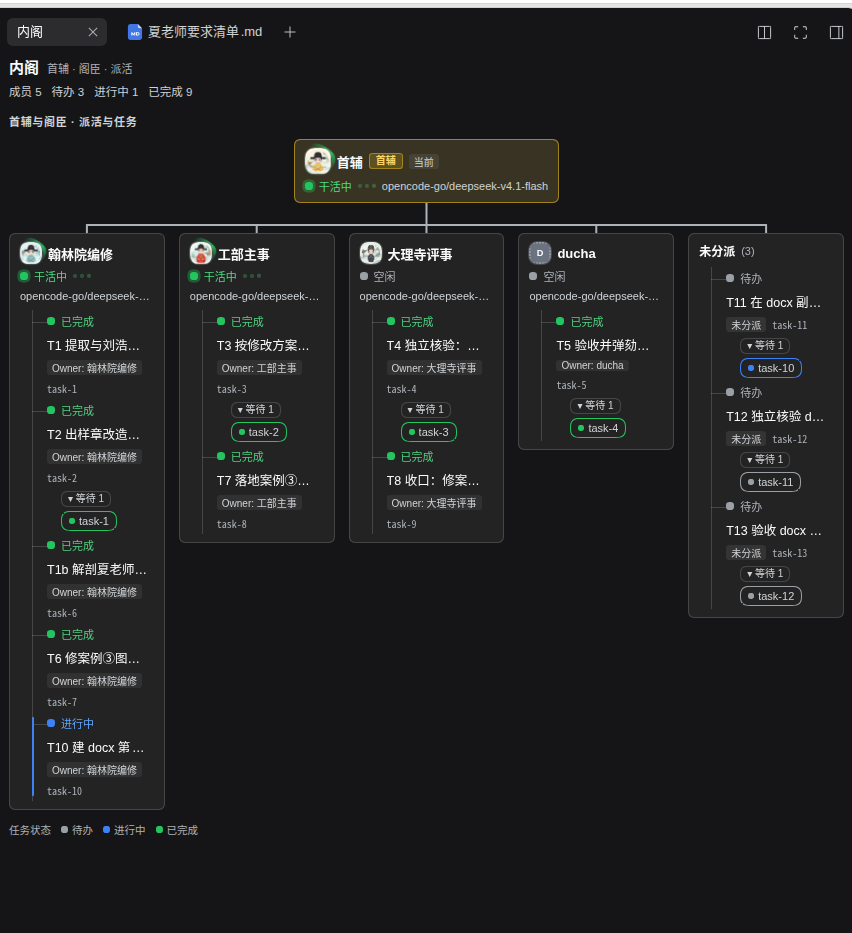

大明科研司 DEEPSEEK HARNESS · DSH BUNDLE
内阁
Cabinet Mode
一个声明式 DSH bundle，为 DeepSeek Harness 加上「内阁模式」：内阁首辅主政， 翰林、工部、大理寺、都察院四司阁臣分司办事。研究优先，结论必带出处。
https://raw.githubusercontent.com/luodaoyi/dsh-cabinet-mode/market-index/marketplace.json
核心特性
以下能力以 README 为准；各能力的实测范围见仓库「Unverified items」一节。
双身份 persona
首辅审题、拆解、分派、裁断、汇总、闭环；翰林院编修、工部尚书、大理寺卿、左都御史按司执行。同一 persona 依 Team 身份短语自认角色，阁臣禁止冒充首辅。
研究优先
默认先调研、后动码，改代码需明确授权。每个结论必须锚定路径、行号或命令输出；未验证事项如实标注，禁止编造来源。
右栏 Cabinet 面板
派工树按 ownerName 归位任务，依赖以 chips 呈现；运行成员绿点脉冲，空闲/启动/失败灰/琥珀/红点分级，任务状态 pending/进行/完成三色着色。
成员可定制
五个职位可改显示名（40 字）、头像与职责 prompt（4000 字）；每司可从官方 session.modelCatalog 单独选模型。保存原子写入，过期草稿无法覆盖新值。
与标准模式同权
复用 DSH 标准模式 22 行插件清单，工具不缩水；声明无硬 DSH 版本门禁，不加 engines.dsh 与 peerDependencies，实测 0.2.1-rc.3 与 rc.5。
跨平台分发
Linux/macOS 启用 tool-bash，Windows 启用 tool-pwsh，与标准模式一致；npm 包 + 市场索引分发，即插即用，无构建步骤。
团队结构
首辅坐镇居上，四司阁臣各领其职；成员由 spawn_teammate 创建并继承同一 persona。

运行实况
右栏 Cabinet 面板在真实会话中的截图，由项目维护者提供；点击可放大。


安装
推荐走 DSH 插件市场：索引安装 npm 包到当前 profile，无需检出仓库或手改 patch。
-
启用自定义插件市场
打开 Plugins → Experimental plugins → More，启用「自定义插件市场」。
-
添加索引源
回到 Plugins → Discover（发现）→ 索引源，粘贴上面的 raw JSON URL，点「添加」。
务必使用 raw URL。GitHub 的 blob / tree 网页地址不是索引，DSH 会报$.format must be 1。 -
安装并启用
等「Cabinet Mode / 内阁模式」出现，点「安装」，确认包为
dsh-cabinet-mode@<version>、registry 为https://registry.npmjs.org/。装完点「立即启用」或在「已安装」页打开开关。 -
重启并选用
完全退出并重启 DSH（preset 与客户端插件只在启动时装配），新建会话，在模式选择器中选「内阁模式」；需要面板时在右栏「+」里打开 Cabinet 标签。
让 AI 助手代为安装（复制这段 prompt）
Install the Cabinet Mode (内阁模式) DSH bundle for me, preferably through its plugin market index: https://raw.githubusercontent.com/luodaoyi/dsh-cabinet-mode/market-index/marketplace.json 1. Identify my DSH version and intended profile. Use the existing UI to enable Custom plugin market, then Plugins → Discover → Index sources. 2. Add the exact raw JSON URL above. Do not use GitHub blob/tree URLs, edit the index, or invent a command to add a market source. 3. Install Cabinet Mode from that source. Verify the confirmation shows dsh-cabinet-mode@<version> from https://registry.npmjs.org/, then verify the Installed result and version. Click Enable now or turn on the plugin switch on Installed, and verify it is enabled. 4. If browser/UI control is unavailable, give me those short UI steps. Use the release tarball or local-directory fallback only when the market is unavailable or I choose it; explain the specific reason first. 5. Do not also append cordis.patch.yml to my profile: installing both ways duplicates the preset. Preserve my existing profile and plugins. 6. Tell me to fully quit and restart DSH, create a new session and choose 内阁模式 (preset id cabinet). Do not claim success until the installed version is verified; do not claim untested team behavior works. On failure, show the exact error. For $.format must be 1, replace the webpage source with the raw JSON URL. Do not repeatedly reinstall or silently switch methods.
回退：Release tarball
仅当市场不可用或本地开发时使用；先完全退出桌面 DSH 以释放 profile 锁。
dsh plugin --profile desktop add https://github.com/luodaoyi/dsh-cabinet-mode/releases/download/v0.4.1/dsh-cabinet-mode-0.4.1.tgz dsh plugin --profile desktop list
方法 A（bundle 安装）与方法 B（node 脚本写 cordis.patch.yml）互斥，同装会使 preset id 重复、声明加载失败。
须知
- 安装或更新后必须完全退出并重启 DSH；已有输出的会话其模式已锁定，需新建会话选用。
- 九件团队工具（spawn_teammate、team_task_* 等）来自
@deepseek-ai/dsh-experimental-agent-team-profileprofile bundle；未启用时内阁按单人规则运行。 - preset 是受信配置，可执行宿主代码；只安装你信任来源的 bundle。
- 成员设置存于
DSH_HOME/profile配置（cabinet-ui 命名空间），同 profile 的多个浏览器共享。 - 市场安装在 Windows rc.5 web 客户端实测通过；Linux/macOS 与其他 DSH 版本未经实测，详见 README 的安装矩阵与「Unverified items」。